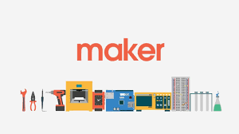

Özyeğin Üniversitesi
Özyeğin Üniversitesi’nin kuruluş çalışmalarına Hüsnü M. Özyeğin Vakfı tarafından 2005 sonbaharında başlandı. Kuruluş çalışmalarında iş dünyası, öğretim üyeleri, üniversite ve lise öğrencilerinden oluşan 500'ü aşkın kişiyi kapsayan araştırmaların yanı sıra "Türkiye ve Dünyada Gelişen Sektörler ve Meslekler Araştırması" yapıldı. Bu araştırmaların sonuçlarından yola çıkılarak ARAMA Katılımlı Yönetim Danışmanlığı tarafından yürütülen tasarım çalışmaları ile üniversitenin temel değerleri ve vizyonu tüm paydaşlarla birlikte tartışıldı. İş dünyasından yöneticiler, öğretim üyeleri, üniversite öğrencileri ve yeni mezunların katıldığı çeşitli çalıştaylarda 300'ü aşkın kişi ile birlikte Özyeğin Üniversitesi vizyonu oluşturuldu.Belirlenen vizyon çerçevesinde çağdaş eğitim sistemi, yaşamla iç içe yenilikçi yapısı, sektörlerle iç içe eğitim yaklaşımı ve buna uygun oluşturduğu programlar ile özgün ve toplumsal gelişime katkı sağlayan bir üniversite olma hedefiyle, resmi olarak 18 Mayıs 2007’de kuruldu.İlk öğrencilerini Eylül 2008'de İstanbul Altunizade Kampüsü’nde karşılayan üniversite, Eylül 2011’den itibaren Çekmeköy Kampüsü’nde eğitime başladı.
Daha fazla bilgi için buraya tıklayınız.
Maker Nedir?
Maker Hareketi (Maker Movement), Teknoloji ile “kendin yap” kültürünün birleşmesinden oluşan, dünyada hızla yayılan bir bir akımdır. Maker Hareketi kapsamında bir kişi kendine maker diyorsa o kişi maker’dır. Yemek yapmaktan, model uçak yapmaya, elektronik devreler ve motorlar aracılığı ile yapılan bir model araçtan, 3 boyutlu yazıcılar ile basılan ve üretilen her ürün, süs eşyası, takı, oyuncak aslında maker hareketi kapsamında, maker ruhu ile yapılmış kabul edilebilir.
Maker Hareketi öncülerinden Dale Dougherty‘nin tanımına göre, “Maker ruhunun” temelinde rekabet yerine paylaşım, para yerine yetenek, yoğun ezber bilgi yerine deneyim vardır.
Daha fazla bilgi için buraya tıklayınız.
Maker Kampı Nedir?
Yeni fikirler her zaman hayal etmekle başlamıştır. Çocukluğunuzu hatırlayın. Uçan bir araba, annemizin evdeki işlerini kolaylaştıran birçok yeni icat…Hayal ettiğin düşünceleri tasarlama vakti! İster el çizimiyle, ister kartondan, ister oyun hamurundan, ister 3D tasarımla, ister tahtadan hiç farketmez.Tasarlamış olduğun nesneleri yapma vakti! Hangi özelliklere sahip olacak? Elektroniğe mi, kodlamaya mı, robotiğe mi ihtiyacın var? Hepsi MakerKamp’ta!Bir Maker aynı zamanda paylaşımcı olmalıdır. Tamamladığın projeleri başkaları yapabilir veya geliştirebilir. Belki bu sefer senin yıldızın parlar?
Kaynakça